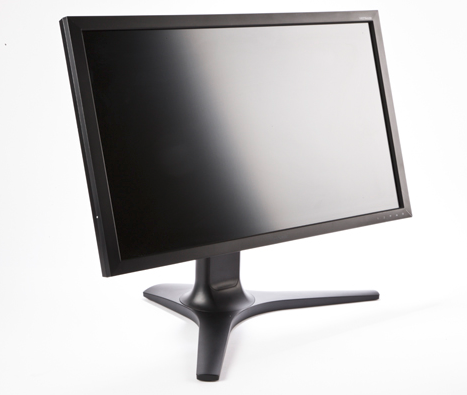

Update (2022-11-02): 9 years later, this machine has been replaced.
This week I got a new machine for my home workstation. My previous machine was a 3.5-year old Asus laptop running Ubuntu 12.04; while the laptop is relatively powerful (Sandy Bridge i7 2820QM CPU), there were a couple of problems that prompted me to upgrade:
- I really wanted to use a high-resolution (WQHD - 2560x1440) screen at home, and the laptop's graphics card (integrated Intel Sandy Bridge graphics) isn't up to the task (its maximal resolution support is 2048x1152).
- It was starting to become sluggish for large tasks mainly due to having just 4 GB of memory. For example, I couldn't really run a full LLVM & Clang build with parallelism because linking would take the whole physical memory and the machine would start thrashing. Building LLVM & Clang in a single thread is unbearably slow (above an hour), and splitting the compilation & linkage is cumbersome and slow.
So after some online research I settled on the following setup. Since I really only use this machine at home when sitting behind my desk, I got a desktop because these are cheaper to upgrade, can house more powerful hardware and I didn't really need any laptop features in it.
Screen
Starting with the crown jewel - a Viewsonic VP2770-LED screen. A stunning 27" with 2560x1440 resolution. I got this one before the new hardware, so I could verify that indeed my old laptop can't push the full resolution to it.
This monitor can run in full resolution only from a DP (Display Port) connector or DVI. This was an important consideration in choosing a motherboard.
CPU, memory, motherboard
Relatively high-end Haswell i7-4771 CPU, with 4 cores / 8 threads at 3.5GHz and 8MB of cache. Crucially, it comes with the Intel HD Graphics 4600 on board, which can support WQHD resolution. There's a catch, though. It only supports such resolution with DP or HDMI. Note - not DVI, so the intersection of GPU and monitor leave only DP as a viable option.
For memory, I got 16GB of Corsair Vengeance DDR3. 16GB should be plenty for now.
Motherboard - the main consideration, as mentioned above, is to have a DP output. This is why I got the Asus Q87M, which is a bit higher-end than the minimal motherboard I could get for my setup. It has DP output as well as a bunch of other goodies like two USB 3.0 ports.
Storage
Another minor reason for the upgrade was to move on from a magnetic disk to SSD. For this new setup I got a 250GB Samsung 840 EVO SSD. I was pondering the size I need, but really for anything above the 100-200GB mark that would probably be backup data so I could use my external HDD to supplement that. On the laptop this system is replacing I never went above 200GB total.
Miscellanea
Since I don't have a discrete GPU and the Haswell CPUs are not overly power-hungry, I could get by with a small power supply. So I got a good, quiet Antec 380W supply. As for the case, one of the simpler CoolerMaster ones that promised to be quiet (and indeed it is).
That's it! In 2013 there are no floppy drives, CD/DVD drives, sound cards, external network cards and a bunch of other crud we used to shove into our desktops just a few short years ago. Since my setup uses Intel's integrated graphics, it's super minimal - there are no PCI cards on the motherboard at all.
Software
After a very short consideration I went for the latest and greatest Ubuntu - 13.10.
I'm very impressed with how quick and easy it is to install an Ubuntu desktop these days. It takes considerably less time and effort than it took to install Windows XP, say a couple of years ago. Part of that can be attributed to the speed of the system (the SSD is smoking fast - Ubuntu installed in just a few minutes), lack of external hardware and other stuff. But all in all, it's a pleasant experience to have a quick setup where everything (including the fancy WQHD monitor on a DP connection) just works with almost no tweaking. I was planning to spend the whole weekend on setting this thing up, and ended up doing it in just a couple of hours spread over week-day evenings and mornings.
And of course, one of my favorite parts of the Ubuntu experience is that all the software you need is just a sudo apt-get away. In addition, many desktop programs (like Dropbox and Chrome) just let you download .deb files and install them.
Online support is so much better these days, thanks to Google and Ask Ubuntu. To answer any question (how do I make the mouse faster? what's a good graphical program to show detailed hardware information?), just type it into Google with "ubuntu 13.10" attached and in all likeness the answer is a couple of clicks away. For me, Ubuntu/Linux has been OS of choice of years, but even for the more general public I could agree that 2013 is the year of the Linux desktop, based on my experience. Really, I should probably go order something from Ubuntu's overpriced gift shop just to contribute back :-)
Finally, I can't overestimate the convenience of having all your configuration ("dot-files") in a Git repository so making your system behave just like you other systems is only a git pull and a few soft links away.
Performance
A couple of years ago when LLVM & Clang were much smaller and could still link successfully on my laptop, it took me about 15 minutes for a full build. Today I built them on the new machine in under 10 minutes (9:35) - which is impressive, given how much they grew in these two years. The peak memory usage (with make -j8) climbed to over 6GB, which aligns with my observations of thrashing on the laptop. The full regression suite (check-all) runs in 1:33 minutes, which is pretty good.
CPython builds 40% faster (0:51 vs. 1:30); its full test suite runs 35% faster (1:23 vs. 2:06).
Node.js builds more than twice as fast (0:46 vs. 1:51).
That's about all the benchmarking I intend to do because that's what I ultimately care about - compiling stuff and running tests - for large projects, quickly in parallel.
The SSD adds a lot of snappiness to the system. It boots up very quickly, everything responds immediately. pss / grep searches are super-fast. It's a great new age where HDDs with their horrible seek times can be placed on the shelves of history.